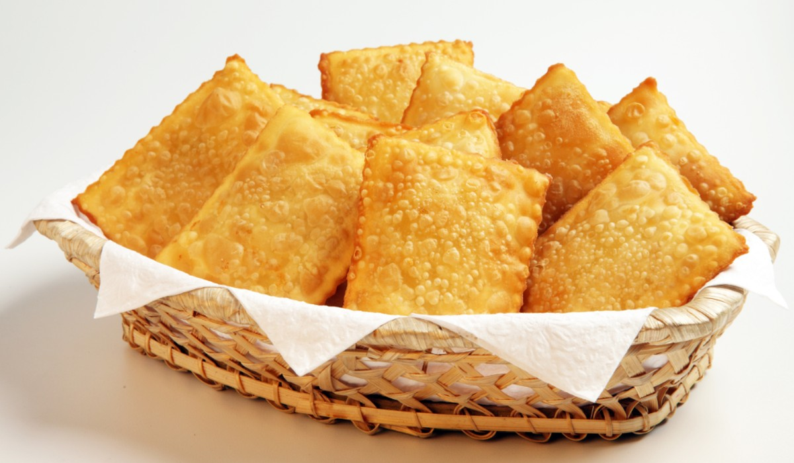

Ebaa chegou na página em que, você conhecerá os lanches que mais adoro comer!
1°Lugar:

Pizza é uma preparação culinária que consiste em um disco de massa fermentada de farinha de trigo, coberto com molho de tomate e os ingredientes variados que normalmente incluem algum tipo de queijo, carnes preparadas ou defumadas e ervas, normalmente orégano ou manjericão, tudo assado em forno.
2° Lugar:
Pastel é um alimento composto por uma massa à base de farinha a que se dá a forma de um envelope, se recheia e depois se frita por imersão em óleo fervente.
3° Lugar:

O hambúrguer também conhecido como hamburgo.É geralmente servida como sanduíche, é este, por extensão, o seu significado mais comum. Pode ser acompanhado por condimentos e outros ingredientes também colocados dentro do pão, como cebola, alface, picles tomate, maionese, ketchup, queijo e bacon.
OBS:
Além desses lanches citados, também gosto de coxinha e lasanha..